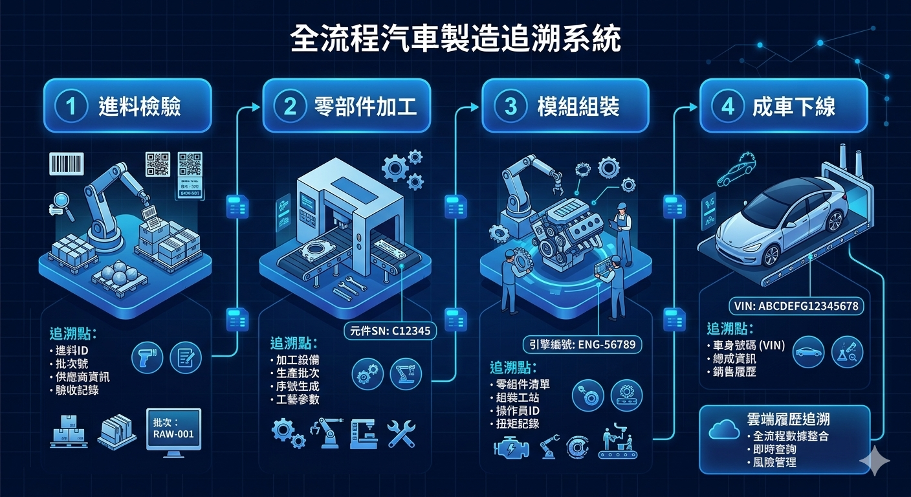
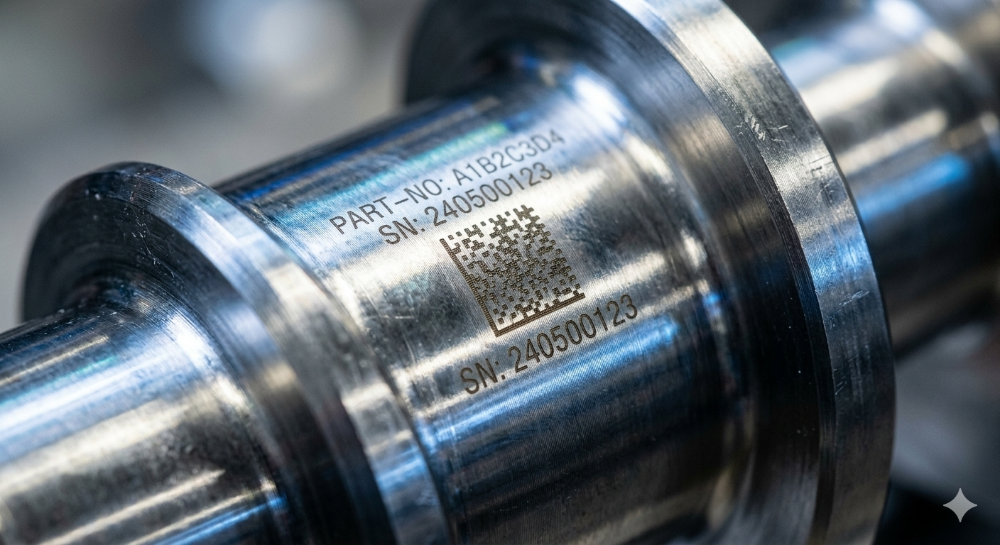

為什麼汽車產業特別重視追溯
汽車是安全性要求極高的產品，一顆螺絲、一片煞車來令、一組電子模組出問題，都可能引發召回。因此車廠與 Tier 1、Tier 2 供應商都被要求建立可追溯性（Traceability）：每個關鍵零件都要能查到它是哪一批、哪一台設備、哪個時間點生產的，以及最後裝到哪一台車上。
一旦發生品質異常，完整的追溯資料能把召回範圍從「整個批次」縮小到「特定序號」，大幅降低召回成本與商譽損失。
什麼是全程視覺追溯
全程視覺追溯，是用機器視覺讀取零件上的識別碼（多為 DPM 直接零件標記），並在每個製程站點自動記錄，串成一條完整的品質履歷。

典型的流程包含：
- 進料：讀取供應商零件上的序號，比對進料資訊。
- 加工/組裝：每站讀碼後，將製程參數、設備編號、時間戳綁定到該序號。
- 檢測：視覺檢測結果（合格/不合格）一併寫入該零件的履歷。
- 成車綁定：最終將零件序號與車身號（VIN）關聯，完成從零件到成車的追溯鏈。
DPM 辨識的難點
汽車零件多為金屬材質，識別碼常用雷射雕刻或針打方式直接標記在零件本體，也就是 DPM（Direct Part Marking）。相較於紙標籤上的印刷條碼，DPM 辨識困難得多：
- 低對比：雕刻碼與金屬底色對比低，普通讀碼器容易失敗。
- 反光與曲面：金屬反光、零件曲面造成影像變形。
- 油污與磨損：產線上的油污、刮痕會讓碼面模糊。

這正是 AI 機器視覺的價值所在。透過適當的打光設計搭配深度學習辨識模型，系統能在低對比、反光、局部磨損的情況下，仍穩定讀出 DPM 碼，讀取率明顯優於傳統規則式讀碼器。
導入視覺追溯的評估重點
導入前建議先釐清幾件事：
- 標記方式：零件用的是雷雕、針打還是印刷？碼種是 Data Matrix 還是 QR？決定打光與鏡頭配置。
- 產線節拍：每件的讀碼時間上限，影響硬體選型。
- 資料串接：讀取結果要寫進 MES、SCADA 還是既有追溯資料庫？介面要先談清楚。
- 不良處理：讀碼失敗或檢測不合格時，產線要如何攔截、標示與重工。
視覺追溯的重點不只是「讀得到碼」，而是把讀碼結果可靠地綁進整條製程資料鏈。讀取率、誤讀率與系統整合，三者缺一不可。
預期效益
導入視覺追溯後，車廠與供應商能得到幾項具體效益：
- 精準召回：從批次縮小到序號，降低召回範圍與成本。
- 品質防呆：錯料、漏站、重複加工在讀碼當下即被攔截。
- 製程可視化：每個序號都有完整履歷，方便追查異常根因。
如果你的產線正要建立零件追溯，或現有讀碼器面對 DPM 碼讀取率不佳，歡迎與我們聯絡，一起評估最適合的視覺追溯方案。